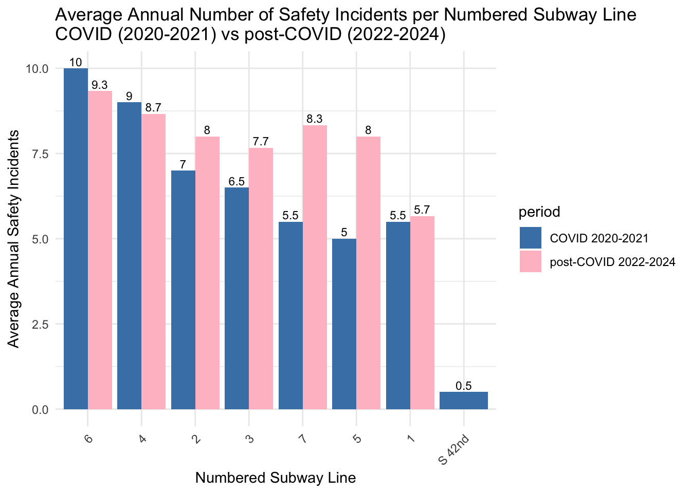
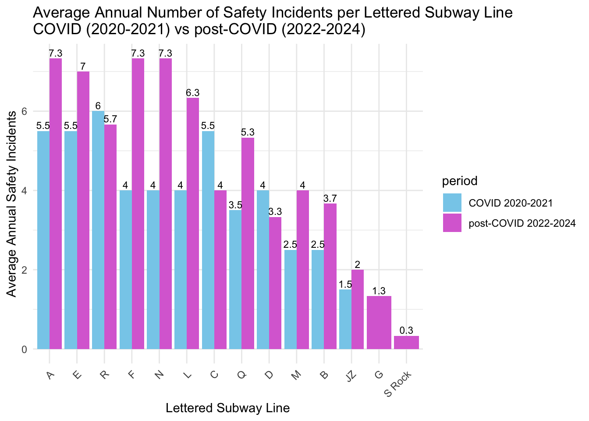
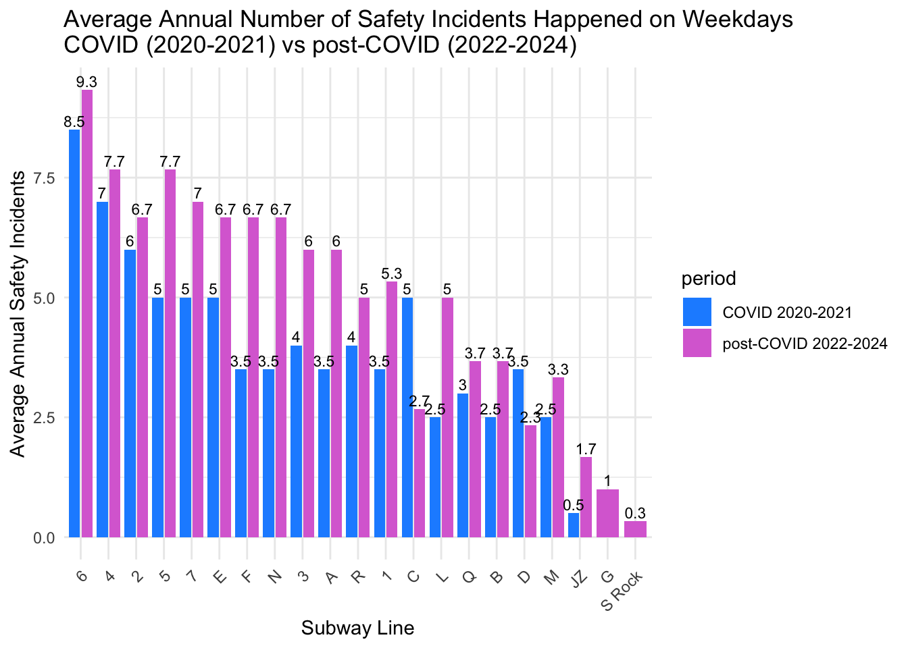
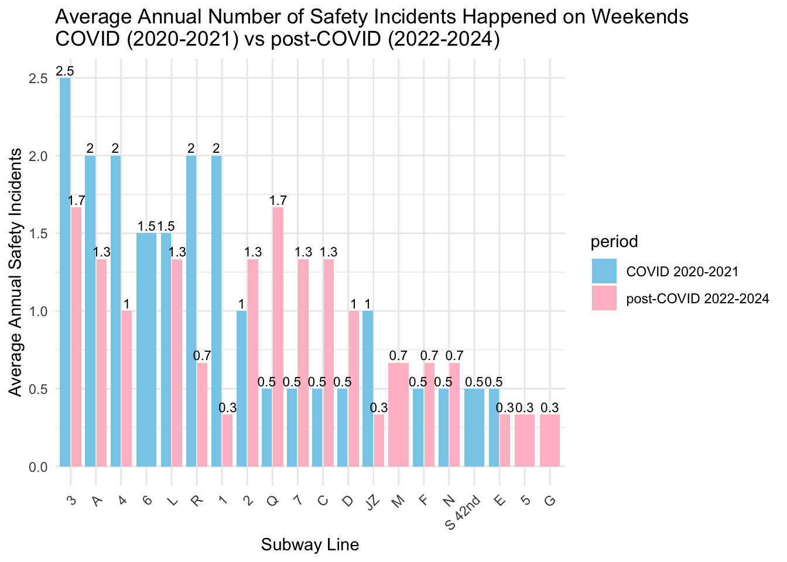
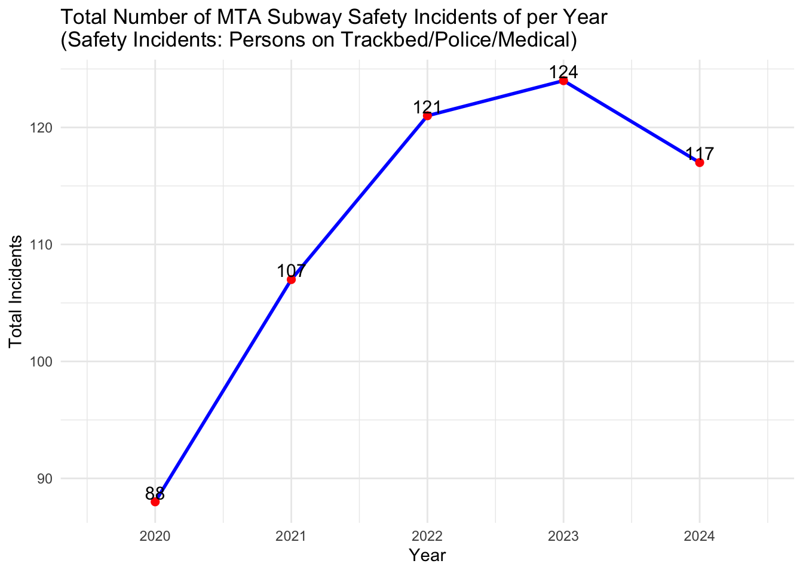

Loading libraries
library(dplyr)
library(tidyverse)
library(ggplot2)
library(stringr)
library(gt)Haolin Mo
The purpose of this analysis is to evaluate trends in MTA subway safety incidents over two distinct periods: COVID-19 period (2020-2021) and post-COVID period (2022-2024). To specific, safety incidents are the Persons on Trackbed/Police/Medical category from major incidents category from dataset “MTA Subway Major Incidents: Beginning 2020”. By analyzing safety incident data across subway lines, we aim to identify patterns, highlight subway lines with significant changes, and provide insights for decision-makers.
To begin, I load essential libraries and package to process data and visualize.
I load the dataset related to “MTA Subway Major Incidents: Beginning 2020”. The dataset contains details on incidents categories across subway lines. The dataset is imported from local file using “read_csv” function. There are several columns beside category in the data set, include month, division (division A represents numbered subway line and division B represents lettered subway line), subway line, day type (“1” represents weekday, “2” represents weekend), and count.
Before the analysis, I need to filter the data for relevant periods and subway lines. First, I divide the data into two subsets based on the time period: COVID-19 period (2020-2021) and post-COVID-19 period (2022-2024). This ensure the time period for each analysis is consistent. A Division = numbered subway lines; B Division = lettered subway lines.
# clean and mutate the format of the csv file, and filter out line with "systemwide"
subway_major_incidents_2020$month <- as.Date(subway_major_incidents_2020$month, format="%Y-%m-%d")
subway_major_incidents_2020 <- subway_major_incidents_2020 |>
mutate(year = format(month, "%Y")) |>
filter(category == "Persons on Trackbed/Police/Medical" & line != "Systemwide")
# filter numbered subway lines in covid period and post-covid period
numbered_subway_lines_covid <- subway_major_incidents_2020 |>
filter(division == "A DIVISION" & year %in% c("2020", "2021"))
numbered_subway_lines_post <- subway_major_incidents_2020 |>
filter(division == "A DIVISION" & year %in% c("2022", "2023", "2024"))
# filter lettered subway lines in covid period and post-covid period
lettered_lines_covid <- subway_major_incidents_2020 |>
filter(division == "B DIVISION" & year %in% c("2020", "2021"))
lettered_lines_post <- subway_major_incidents_2020 |>
filter(division == "B DIVISION" & year %in% c("2022", "2023", "2024"))Filter the day type by weekdays and weekends, which 1 represents weekdays, and 2 represents weekends. And calculate the average annual numbers.
avg_weekday_covid <- subway_major_incidents_2020 |>
filter(day_type == "1" & year %in% c("2020", "2021")) |> # Filter weekdays during COVID
group_by(line) |>
summarise(avg_incidents = n() / 2) |> # Divide total incidents by 2 years
mutate(period = "COVID 2020-2021")
# Average number of safety incidents on weekdays post-COVID period (2022-2024)
avg_weekday_post_covid <- subway_major_incidents_2020 |>
filter(day_type == "1" & year %in% c("2022", "2023", "2024")) |> # Filter weekdays post-COVID
group_by(line) |>
summarise(avg_incidents = n() / 3) |> # Divide total incidents by 3 years
mutate(period = "post-COVID 2022-2024") # Add a column to label this period
# Calculate average number of safety incidents on weekends during COVID period (2020-2021)
avg_weekend_covid <- subway_major_incidents_2020 |>
filter(day_type == "2" & year %in% c("2020", "2021")) |> # Filter weekends during COVID
group_by(line) |>
summarise(avg_incidents = n() / 2) |> # Divide total incidents by 2 years
mutate(period = "COVID 2020-2021") # Add a column to label this period
# Calculate average number of safety incidents on weekends post-COVID period (2022-2024)
avg_weekend_post_covid <- subway_major_incidents_2020 |>
filter(day_type == "2" & year %in% c("2022", "2023", "2024")) |> # Filter weekends post-COVID
group_by(line) |>
summarise(avg_incidents = n() / 3) |> # Divide total incidents by 3 years
mutate(period = "post-COVID 2022-2024") # Add a column to label this periodTo compare the trends for both periods, I calculate the average annual numbers of safety incidents for each subway lines, because there are 2 years interval for COVID, and 3 years interval for COVID, I’d like to make the data clearer.
# Numbered lines: Calculate average number of safety incidents for COVID period (2020-2021)
average_incidents_by_line_covid <- numbered_subway_lines_covid |>
group_by(line) |>
summarise(avg_incidents = n() / 2) |> # Divide total incidents by 2 years
arrange(desc(avg_incidents)) |>
mutate(period = "COVID 2020-2021") # Add a column to label this period
# Numbered lines: Calculate average number of safety incidents for post-COVID period (2022-2024)
average_incidents_by_line_post <- numbered_subway_lines_post |>
group_by(line) |>
summarise(avg_incidents = n() / 3) |> # Divide total incidents by 3 years
arrange(desc(avg_incidents)) |>
mutate(period = "post-COVID 2022-2024") # Add a column to label this period
# Lettered lines: Calculate average number of safety incidents for COVID period (2020-2021)
avg_incidents_by_lettered_line_covid <- lettered_lines_covid |>
group_by(line) |>
summarise(avg_incidents = n() / 2) |> # Divide total incidents by 2 years
arrange(desc(avg_incidents)) |>
mutate(period = "COVID 2020-2021") # Add a column to label this period
# Lettered lines: Calculate average number of safety incidents for post-COVID period (2022-2024)
avg_incidents_by_lettered_line_post <- lettered_lines_post |>
group_by(line) |>
summarise(avg_incidents = n() / 3) |> # Divide total incidents by 3 years
arrange(desc(avg_incidents)) |>
mutate(period = "post-COVID 2022-2024") # Add a column to label this periodI use bar charts to visualize the average annual incidents for each subway line. A table is also created to summarize the data, including percentage changes. The chart below shows the trends for numbered subway lines, also a summary table for percentage changes for total numbered subway lines.
For numbered lines, as we can see chart while the average annual number of safety incidents is decreased for the 6 and 4 train, it is increased on all other lines, so the overall trends from covid to post-covid time periods increase by 13.61%. The 6 train has the highest average incidents during COVID and post-COVID but decreased to 9.3 in post-COVID. The 5 train and 7 train have increased the most of almost any numbered subway line.
# Combine the two datasets
combined_avg_line <- bind_rows(average_incidents_by_line_covid, average_incidents_by_line_post)
# Create a grouped bar chart for average incidents
ggplot(combined_avg_line, aes(x = reorder(line, -avg_incidents), y = avg_incidents, fill = period)) +
geom_bar(stat = "identity", position = "dodge") +
geom_text(aes(label = round(avg_incidents, 1)), # Round to 1 decimal for better readability
position = position_dodge(width = 0.9),
vjust = -0.3,
size = 3) +
labs(title = "Average Annual Number of Safety Incidents per Numbered Subway Line\nCOVID (2020-2021) vs post-COVID (2022-2024)",
x = "Numbered Subway Line",
y = "Average Annual Safety Incidents") +
scale_fill_manual(values = c("COVID 2020-2021" = "steelblue", "post-COVID 2022-2024" = "pink")) +
theme_minimal() +
theme(axis.text.x = element_text(angle = 45, hjust = 1))
# Calculate total average incidents for each period
total_numbered_avg_covid <- sum(average_incidents_by_line_covid$avg_incidents)
total_numbered_avg_post_covid <- sum(average_incidents_by_line_post$avg_incidents)
# Calculate percentage change
percentage_change_numbered <- ((total_numbered_avg_post_covid - total_numbered_avg_covid) / total_numbered_avg_covid) * 100
# tab table for percentage change
percentage_change_df <- data.frame(
Metric = "Percentage Change of Numbered Lines",
Value = percentage_change_numbered
)
# Use gt to format the table
percentage_change_df |>
gt() |>
tab_header(title = "Percentage Change of Numbered Lines") |>
fmt_number(
columns = Value,
decimals = 2
) |>
cols_label(
Metric = "Metric",
Value = "Value (%)"
)| Percentage Change of Numbered Lines | |
|---|---|
| Metric | Value (%) |
| Percentage Change of Numbered Lines | 13.61 |
The chart below shows the trends for lettered subway lines, also a summary table for percentage changes for total lettered subway lines.
For lettered subway lines, the numbers of annual average safety incidents of almost all subway increase from COVID to post-COVID period, except the R and D train, with increase by 34%. The A, E, F, and N trains exhibit a significant increase from an average of 4 incidents during COVID to 7.3 incidents post-COVID, which increase the most across all lines.
combined_avg_lettered_line <- bind_rows(avg_incidents_by_lettered_line_covid, avg_incidents_by_lettered_line_post)
# Create a grouped bar chart for average annual incidents
ggplot(combined_avg_lettered_line, aes(x = reorder(line, -avg_incidents), y = avg_incidents, fill = period)) +
geom_bar(stat = "identity", position = "dodge") +
geom_text(aes(label = round(avg_incidents, 1)), # Add labels rounded to 1 decimal
position = position_dodge(width = 0.9),
vjust = -0.3,
size = 3) +
labs(title = "Average Annual Number of Safety Incidents per Lettered Subway Line\nCOVID (2020-2021) vs post-COVID (2022-2024)",
x = "Lettered Subway Line",
y = "Average Annual Safety Incidents") +
scale_fill_manual(values = c("COVID 2020-2021" = "skyblue", "post-COVID 2022-2024" = "orchid")) +
theme_minimal() +
theme(axis.text.x = element_text(angle = 45, hjust = 1))
# Calculate total average incidents for each period
total_lettered_avg_covid <- sum(avg_incidents_by_lettered_line_covid$avg_incidents)
total_lettered_avg_post_covid <- sum(avg_incidents_by_lettered_line_post$avg_incidents)
# Calculate percentage change
percentage_change_lettered <- ((total_lettered_avg_post_covid - total_lettered_avg_covid) / total_lettered_avg_covid) * 100
# tab table for percentage change
percentage_change_lettered_df <- data.frame(
Metric = "Percentage Change of Lettered Lines",
Value = percentage_change_lettered
)
# Use gt to format the table
percentage_change_lettered_df |>
gt() |>
tab_header(title = "Percentage Change of Lettered Lines") |>
fmt_number(
columns = Value,
decimals = 2
) |>
cols_label(
Metric = "Metric",
Value = "Value (%)"
)| Percentage Change of Lettered Lines | |
|---|---|
| Metric | Value (%) |
| Percentage Change of Lettered Lines | 34.02 |
For this part, I filter the data by day type to compare the changes of incidents that happen on weekdays and on weekends. I use bar charts to visualize the average annual incidents for each subway line by day type. The chart below shows the average annual incidents numbers on weekdays by each lines between COVID and post-COVID period.
The overall trends of safety incidents numbers from COVID to post-COVID period for each line increases during weekdays. The 6 train consistently has the highest incidents numbers, increasing from average 8.5 during COVID to 9.3 post-COVID. The F and N trains almost increase the most of all lines. In contrast, the C and D trains showed a notable decrease.
# Combine the two datasets
combined_avg_weekday <- bind_rows(avg_weekday_covid, avg_weekday_post_covid)
# Create a grouped bar chart for average annual incidents
ggplot(combined_avg_weekday, aes(x = reorder(line, -avg_incidents), y = avg_incidents, fill = period)) +
geom_bar(stat = "identity", position = position_dodge(width = 0.9), width = 0.8) +
geom_text(aes(label = round(avg_incidents, 1)), # Add labels rounded to 1 decimal
position = position_dodge(width = 0.9),
vjust = -0.3,
size = 3) +
labs(title = "Average Annual Number of Safety Incidents Happened on Weekdays\nCOVID (2020-2021) vs post-COVID (2022-2024)",
x = "Subway Line",
y = "Average Annual Safety Incidents") +
scale_fill_manual(values = c("COVID 2020-2021" = "dodgerblue", "post-COVID 2022-2024" = "orchid")) +
theme_minimal() +
theme(axis.text.x = element_text(angle = 45, hjust = 1))
The chart below shows the average annual incidents numbers on weekends by each lines between covid and post-covid period.
Over the weekend, the number of safety incidents dropped on some subway lines, such as the 3, A, 4, R, and E trains. The number of safety incidents is up significantly on some subway lines, such as the Q, 7, and C trains. Although the safety incidents numbers on the 3 train decrease, it still has the highest number on the weekend.
# Combine the two datasets
combined_avg_weekend <- bind_rows(avg_weekend_covid, avg_weekend_post_covid)
# Create a grouped bar chart for average annual incidents
ggplot(combined_avg_weekend, aes(x = reorder(line, -avg_incidents), y = avg_incidents, fill = period)) +
geom_bar(stat = "identity", position = position_dodge(width = 0.9), width = 0.8) +
geom_text(aes(label = round(avg_incidents, 1)), # Add labels rounded to 1 decimal
position = position_dodge(width = 0.9),
vjust = -0.3,
size = 3) +
labs(title = "Average Annual Number of Safety Incidents Happened on Weekends\nCOVID (2020-2021) vs post-COVID (2022-2024)",
x = "Subway Line",
y = "Average Annual Safety Incidents") +
scale_fill_manual(values = c("COVID 2020-2021" = "skyblue", "post-COVID 2022-2024" = "pink")) +
theme_minimal() +
theme(axis.text.x = element_text(angle = 45, hjust = 1))
Below, I create a line chart to show the overall trends of annual safety incidents numbers from 2020 to 2024. Overall, the overall trends for numbers of safety incidents is increasing from 2020 to 2024.
# A tibble: 5 × 2
year total_incidents
<chr> <int>
1 2020 88
2 2021 107
3 2022 121
4 2023 124
5 2024 117ggplot(annual_incidents, aes(x = as.integer(year), y = total_incidents)) +
geom_line(color = "blue", size = 1) +
geom_point(color = "red", size = 2) +
geom_text(aes(label = total_incidents),
position = position_dodge(width = 0.9),
vjust = -0.2,
size = 4) +
labs(title = "Total Number of MTA Subway Safety Incidents of per Year \n(Safety Incidents: Persons on Trackbed/Police/Medical)",
x = "Year",
y = "Total Incidents") +
theme_minimal()
The analysis reveals a significant increase in MTA subway safety incidents from the COVID period (2020-2021) to the post-COVID period (2022-2024). While some lines experience a slight decline in incidents, most numbered and lettered lines show substantial increases. On weekdays, safety incidents increased across most lines, while weekend trends are more mixed, with some lines showing decreases.
The surge in accidents during post-COVID can be attributed to the fact that while everyone returned to normal life after COVID and ridership increased, staff shortages and aging infrastructure led to increased safety hazards. The subway, as an essential part of every New Yorker’s life, will pose a threat to rider safety if improvements are not made to the safety incident problem. These findings point that MTA have to take steps, including infrastructure upgrades and enhanced surveillance, to address the increasing safety concerns in the subway system.